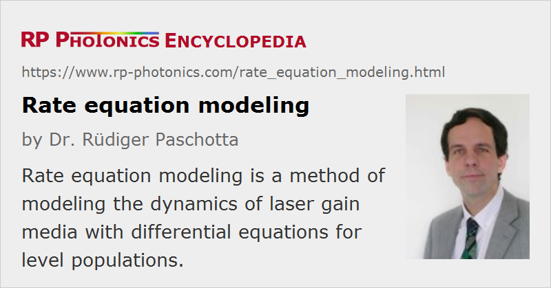

Rate Equation Modeling
Definition: a method of modeling the dynamics of laser gain media
German: Ratengleichungs-Modellierung
Categories: optical amplifiers, methods, physical foundations
How to cite the article; suggest additional literature
Author: Dr. Rüdiger Paschotta
The dynamics of energy level populations in laser gain media (e.g. rare-earth-doped crystals or fibers) are often modeled using a system of rate equations. These are differential equations, describing the temporal evolution of level populations under the influence of optically induced and non-radiative transitions:
- absorption processes, possibly including excited-state absorption
- spontaneous and stimulated emission
- multi-phonon transitions
- energy transfers which can lead to upconversion and quenching
Rate equation models can be part of more comprehensive numerical models, which describe e.g. the spatial distribution of optical powers in fiber amplifiers or bulk lasers, or the dynamic behavior of Q-switched lasers. They can thus help in understanding quantitatively the operation of laser and amplifier devices, and allow one, e.g., to evaluate whether the performance of a device is close to the limitations set by the fundamental principle of operation.
Example: Rate Equations for Erbium-doped Gain Media
As an example, consider the dynamics of an erbium-doped gain medium, such as used in, e.g., erbium-doped fiber amplifiers. Figure 1 shows the energy level diagram and the most important radiative and non-radiative transitions. Erbium amplifiers and lasers operating in the 1.5-μm spectral region exhibit a quasi-three-level scheme. For simplicity, the energy levels (actually Stark level manifolds) of the erbium (Er3+) ions are labeled on the left-hand side with an index which is e.g. 1 for the ground-state manifold 4I15/2 and 2 for the upper-state manifold 4I13/2. Optical absorption and stimulated emission transitions, as caused by a pump beam at 980 nm and a signal beam at 1550 nm, are indicated with blue arrows, and the gray arrows indicate spontaneous and non-radiative transitions. The lower transition (level 2 → 1) is mostly caused by spontaneous emission, whereas the upper transition (3 → 2) is dominated by multi-phonon transitions. Only transitions between the lowest three levels are considered, assuming that excited-state absorption to higher levels and upconversion processes are weak.
For that situation, the rate equation system obtained is the following:

where nj indicates the fractional level population of level j. This variable is e.g. 1 if all ions are in the corresponding level manifold. As only the mentioned three levels are involved, we have n1 + n2 + n3 = 1. (The parameters nj can also be interpreted as excitation densities with units of m−3; only in rate equation systems containing nonlinear terms, e.g. for energy transfers, the form of the equations depends on that interpretation.) The parameters Ajk indicate spontaneous transition rates from level j to k, with units of s−1. For example, A21 is the inverse upper-state lifetime. Furthermore, the equations contain absorption and stimulated emission rates, which are determined by transition cross sections σjk (the values of which are dependent on the wavelengths involved), optical intensities Ip and Is at the pump and signal wavelength, and photon energies hν.
The multi-phonon transition 3 → 2 is usually strong if the gain medium (e.g. a silica fiber) has a high phonon energy. Therefore, n3 will usually be small (except for extremely high pump intensities), as ions pumped into level 3 will rapidly be transferred to level 2. Consequently, it is often valid to neglect the population in level 3, and also the other transitions starting from that level. The equation system then simplifies to

where of course one of the equations is redundant, as the sum of the two level populations must stay unity in any case.
Various circumstances can lead to additional complications:
- It is common to insert additional terms, e.g. for energy transfer processes. There may be, e.g., terms proportional to n22 for cooperative upconversion processes, where one ion in level 2 transfers energy to another ion in the same level, resulting in one more ion in the ground-state manifold and the other one in a higher level. Assuming that the higher levels quickly decay to level 2, the additions to the equation system are relatively simple. As another example, Ref. [3] discusses rate equations for the more complicated level scheme of thulium (Tm3+) ions in fluoride fibers, including several excited-state absorption processes.
- It is also possible to include energy transfers between different species of ions. A common case is that of erbium–ytterbium-doped fibers, where primarily ytterbium ions absorb pump radiation, and transfer energy to erbium ions. The model then includes level populations for all involved types of ions, and the corresponding coupling terms.
- Additional optical wavelengths can be involved e.g. if amplified spontaneous emission (ASE) occurs in a fiber amplifier. In numerical models, the ASE spectrum is divided into discrete wavelength slots, each one being associated with different values of the absorption and emission cross sections.
- Generally, the rate equations have to be solved for different positions within the gain medium, as the optical intensities depend on both the longitudinal and transverse coordinates.
Solving and Using the Rate Equations
For a given location in the gain medium and for given optical intensities, the temporal evolution of the population densities can be calculated by temporal integration of the rate equations. This can be done e.g. with the Runge–Kutta method. Note, however, that rate equations are often a so-called “stiff” system of differential equations, involving very different time constants. The fastest processes in the system (e.g. related to relatively fast non-radiative transitions) then force one to use a fairly small temporal step size, as the numerical solution would otherwise become unstable. At the same time, much slower processes often imply that the evolution must be calculated over a long time span, so that in effect many numerical steps are needed. For such reasons, it can be inefficient to calculate the steady-state population densities for given optical intensities simply by simulating the temporal evolution. (See also the Spotlight article of 2008-10-20.)
For simple cases, it is easy to calculate analytically the steady-state populations for given pump and signal intensities. For example, the simplified equation system above leads to the following result:
It is also possible to calculate the evolution of both the population densities and the optical powers, e.g., in order to model the laser dynamics of a Q-switched laser. The set of differential equations then includes the rate equations for the populations as well as dynamical equations for the optical powers.
In many situations, it is possible and convenient to derive equations for spatially averaged population densities. In the case of a simple level scheme, the population of the gain medium is then described with a single variable, which is directly related to the laser gain. This variable can then be used e.g. as a dynamic variable in the dynamic equations for population (or gain) and laser intensity, as discussed in the article on laser dynamics.
Limitations of Rate Equation Modeling
Rate equations describe the statistical evolution of level populations, and are based on a number of assumptions. They do not describe coherent phenomena such as Rabi oscillations, as they average over many ions, which experience slightly different microscopic environments and different optical intensities. It is further assumed that all ions essentially function in the same way. The latter assumption can be violated e.g. if clustering occurs in the gain medium. In such a case, ions within clusters may exhibit, e.g., much stronger upconversion processes than other ions do, and should therefore be treated in the model as a separate species. Such extended models have been developed [8], but they are more complicated, and often involve a number of parameters which are hard to access experimentally.
Questions and Comments from Users
Here you can submit questions and comments. As far as they get accepted by the author, they will appear above this paragraph together with the author’s answer. The author will decide on acceptance based on certain criteria. Essentially, the issue must be of sufficiently broad interest.
Please do not enter personal data here; we would otherwise delete it soon. (See also our privacy declaration.) If you wish to receive personal feedback or consultancy from the author, please contact him e.g. via e-mail.
By submitting the information, you give your consent to the potential publication of your inputs on our website according to our rules. (If you later retract your consent, we will delete those inputs.) As your inputs are first reviewed by the author, they may be published with some delay.
Bibliography
| [1] | M. Peroni and M. Tamburrini, “Gain in erbium-doped fiber amplifiers: a simple analytical solution for the rate equations”, Opt. Lett. 15 (15), 842 (1990), doi:10.1364/OL.15.000842 |
| [2] | C. R. Giles and E. Desurvire, “Modeling erbium-doped fiber amplifiers”, IEEE J. Lightwave Technol. 9 (2), 271 (1991), doi:10.1109/50.65886 |
| [3] | R. Paschotta et al., “Characterization and modeling of thulium:ZBLAN blue upconversion fiber lasers”, J. Opt. Soc. Am. B 14 (5), 1213 (1997), doi:10.1364/JOSAB.14.001213 |
| [4] | G. C. Valley, “Modeling cladding-pumped Er/Yb fiber amplifiers”, Opt. Fiber Technol. 7, 21 (2001) (useful review on amplifier modeling), doi:10.1006/ofte.2000.0351 |
| [5] | O. Svelto, Principles of Lasers, Plenum Press, New York (1998) |
| [6] | E. Desurvire, Erbium-Doped Fiber Amplifiers: Principles and Applications, John Wiley & Sons, New York (1994) |
| [7] | A. E. Siegman, Lasers, University Science Books, Mill Valley, CA (1986) |
| [8] | M. J. F. Digonnet, Rare-Earth-Doped Fiber Lasers and Amplifiers, 2nd edn., CRC Press, Boca Raton, FL (2001) |
| [9] | R. Paschotta, tutorial on "Fiber Amplifiers", part 6 |
| [10] | R. Paschotta, tutorial on "Modeling of Fiber Amplifiers and Lasers" |
See also: laser modeling, laser dynamics, rare-earth-doped gain media, The Photonics Spotlight 2008-10-20
and other articles in the categories optical amplifiers, methods, physical foundations
|  |
If you like this page, please share the link with your friends and colleagues, e.g. via social media:
These sharing buttons are implemented in a privacy-friendly way!